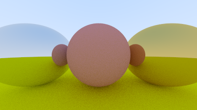
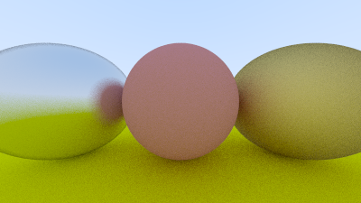
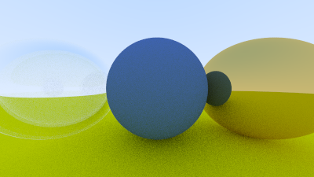
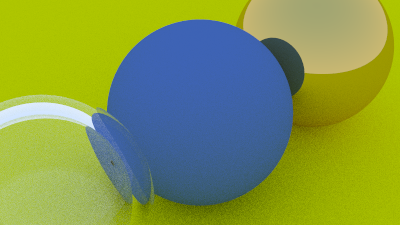
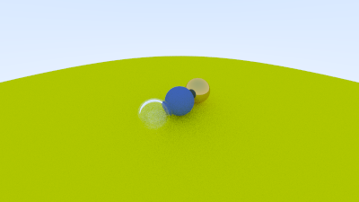

About the engine
This is a from-scratch implementation of a recursive path tracer, built while working through Peter Shirley's Ray Tracing in One Weekend. No OpenGL, no Vulkan, no precompiled libraries — every pixel is the result of a ray cast into the scene, bounced off surfaces according to material BRDFs, and accumulated over hundreds of samples.
The point wasn't to be fast. The point was to understand what a graphics API is actually doing under the hood — how rays are generated, how intersections are computed, how light scatters off different materials, why noise looks the way it does. By the end the engine renders the classic cover-image scene of the book: a sea of randomly placed spheres with glass, diffuse, and metal materials.
What it implements
- Ray generation. Pinhole camera with configurable position, target, up-vector, and vertical FOV.
- Sphere intersection. Closed-form quadratic solve for ray–sphere hits, sorted by distance.
- Antialiasing. Multiple jittered rays per pixel, averaged for clean edges and soft shadows.
- Diffuse (Lambertian). Random unit-sphere scattering — produces matte, color-tinted surfaces.
- Metal. Mirror reflection with optional fuzz factor; recovers reflective spheres with imperfect surfaces.
- Dielectric. Refraction via Snell's law + Schlick approximation for Fresnel — yields convincing glass.
- Defocus blur. Lens-aperture sampling for depth-of-field effects.
- Gamma correction. sRGB output mapping so the linear-space math actually looks right on a monitor.
Progression
Each render is a checkpoint from the book — feature added on the previous, until the engine could produce the final cover scene.




